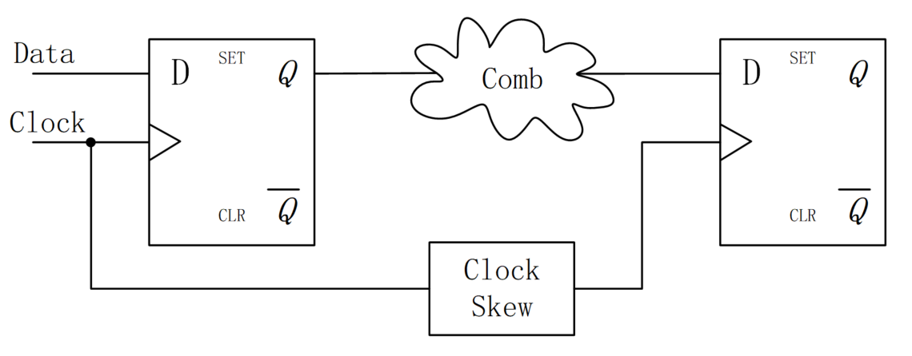
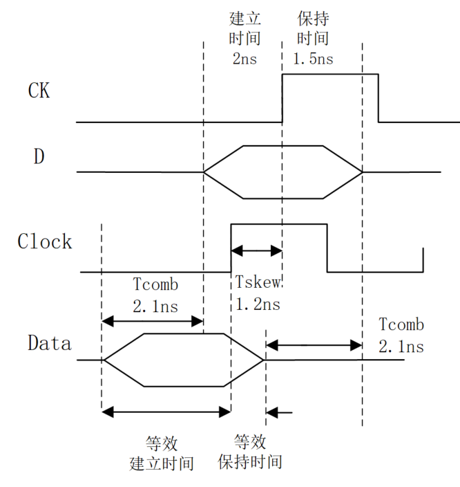

关键词： 建立时间， 保持时间
对于数字系统而言，建立时间（setup time）和保持时间（hold time）是数字电路时序的基础。数字电路系统的稳定性，基本取决于时序是否满足建立时间和保持时间。所以，这里用一整节的篇幅，来详细的说明建立时间和保持时间的概念。
基本概念
建立时间就是时钟触发事件来临之前，数据需要保持稳定的最小时间，以便数据能够被时钟正确的采样。
保持时间就是时钟触发事件来临之后，数据需要保持稳定的最小时间，以便数据能够被电路准确的传输。
可以通俗的理解为：时钟到来之前，数据需要提前准备好；时钟到来之后，数据还要稳定一段时间。建立时间和保持时间组成了数据稳定的窗口，如下图所示。

《1.3 门延迟》中已经介绍过一种简单的 D 触发器。下面再看一种典型的上升沿 D 触发器，来说明建立时间和保持时间的由来。

G1~G4 与非门是维持阻塞电路，G5~G6 组成 RS 触发器。
时钟直接作用在 G2/G3 门上，时钟为低时 G2/G3 通道关闭，为高时通道打开，进行数据的采样传输。
但数据传输到 G2/G3 门之前，会经过 G4/G1 与非门，将引入时间延迟。引入建立时间的概念，就是为了补偿数据在 G4/G1 门上的延迟。即时钟到来之前，G2/G3 端的输入数据需要准备好，以便数据能够被正确的采样。
数据被时钟采样完毕后，传输到 RS 触发器进行锁存之前，也需要经过 G2/G3 门，也会引入延迟。保持时间就是为了补偿数据在 G2/G3 门上的延迟。即时钟到来之后，要保证数据能够正确的传输到 G6/G5 与非门输入端。
如果数据在传输中不满足建立时间或保持时间，则会处于亚稳态，导致传输出错。
约束条件
建立时间约束条件
下图是一个典型的触发器到触发器之间的数据传输示意图。其中 "Comb" 代表组合逻辑延迟，"Clock Skew" 表示时钟偏移，数据均在时钟上升沿触发。

时钟到来之前，数据需要提前准备好，才能被时钟正确采样，要求数据路径 （data path） 比时钟路径 （clock path）更快，即数据到达时间（data arrival time）小于数据要求时间（data required time）。则建立时间需要满足的表达式为：
Tcq + Tcomb + Tsu <= Tclk + Tskew （1）
各个时间参数说明如下：
- Tcq: 寄存器 clock 端到 Q 端的延迟；
- Tcomb： data path 中的组合逻辑延迟；
- Tsu: 建立时间；
- Tclk: 时钟周期；
- Tskew: 时钟偏移。
对上式进行变换，则理论上电路能够承载的最小时钟周期和最快时钟频率分别为：
最小时钟周期 = Tcq + Tcomb + Tsu - Tskew 最快时钟频率 = 1 / (Tcq + Tcomb + Tsu - Tskew)
保持时间约束条件
时钟到来之后，数据还要稳定一段时间，这就要求前一级的数据延迟（data delay time）不要大于触发器的保持时间，以免数据被冲刷掉。则保持时间需要满足的表达式为：
Tcq + Tcomb >= Thd + Tskew (2)
各个时间参数说明如下：
- Tcq: 寄存器 clock 端到 Q 端的延迟；
- Tcomb： data path 中的组合逻辑延迟；
- Thd: 保持时间；
- Tskew: 时钟偏移。
由式 (1) (2) 可以推导出时钟偏移、组合逻辑延迟及时钟周期的约束。
建议大家只需要记住这 2 个最基本的约束条件表达式，需要求取其他参数约束时，再进行推导，以免各种推导造成记忆混乱。
建立时间与保持时间时序图
一个关于建立时间和保持时间的复杂时序图如下所示。
其中，绿色部分表示建立时间的裕量（margin），蓝色部分表示保持时间的裕量。时间裕量，其实就是电路在满足时序约束的条件下，不等式 (1) 或 (2) 两边时间的差值。
建立时间裕量为：（时钟路径时间）-（数据路径时间） 保持时间裕量为：（数据延迟时间） - （保持时间 + 时钟偏移）
该图只是便于理解建立时间和保持时间约束条件的推导。如果这里会造成记忆混乱，建议不要深究（^_^）。

计算举例
为更好的理解建立时间和保持时间的概念，也为面试或工作提供方便，这里列举一些典型的建立时间和保持时间的试题，以供参考。
例1：
考虑线网延迟，某电路各种延迟值（单位：ns）如下，时钟周期为 15ns，请判断该电路的建立时间和保持时间是否存在 violation ？

解：
这里涉及了延迟值的最大值和最小值。
因为要求时序约束恒成立，所以式 (1) (2) 的变形为：
max (data path time) <= min (clock path time) min (data delay time) >= max (Thd + Tskew)
建立时间检查：
max (data path time) = 2 + 11 + 2 + 9 + 2 + 2 = 28ns min (clock path time) = 15 + 2 + 5 + 2 = 24ns
因此建立时间存在 violation。
保持时间检查：
min (data delay time) = 1 + 9 + 1 + 6 + 1 = 18ns max (Thd + Tskew) = 3 + 3 + 9 + 2 = 17ns
因此保持时间不存在 violation，裕量（margin）为 1ns。
此例不能生硬的去照搬建立时间和保持时间的表达式，而要从数据路径、时间路径、数据延迟等概念去建立约束条件。所以，各种时序约束条件还要根据实际电路去分析。
例2：
一道知名公司的面试题：时钟周期为 T, 第一级触发器 D1 建立时间最大值为 T1max，最小值为 T1min。组合逻辑最大延迟为 T2max, 最小值为 T2min。问：第二级触发器 D2 的建立时间和保持时间应该满足什么条件？
解：
第二级的建立时间和保持时间和第一级触发器没有直接关系，所以这里的 T1max 和 T1min 是迷惑项。
例题中也没有给出时钟到 Q 端的延迟和时钟偏移，这里也不用考虑。
结合例 1 的指示，所以 D2 建立时间 Tsu 和保持时间 Thd 应该满足：
T2max + Tsu <= T T2min >= Thold
即
Tsu <= T - T2max Thold <= T2min
此例中很多延迟类型没有考虑。建立时序约束条件时，还需要根据已知条件懂得取舍。
例3：
一种简单的分频电路如下所示。该触发器建立时间为 3ns, 保持时间为 3ns， 逻辑延迟为 6ns，两个反相器延迟为 1ns，连线延迟为0。则该电路的最高工作频率是多少？

解：
这里的逻辑延迟要理解为时钟端到 Q 端的延迟，一定要注意不是电路中的组合逻辑延迟。
因为触发器 Q 端和 D 端连接，可以理解为两个触发器直接进行传输，所以 data path 没有组合逻辑延迟，只有一个反相器延迟。
因为只有一个钟，所以也没有时钟偏移，clock path 的反相器延迟也是迷惑项。
所以，时序约束条件为：
Tcq + Tbuf + Tsu <= Tclk
可得该电路最高工作频率为：
1 / (6ns + 1ns + 3ns) = 100Mhz。
此例是一个触发器自身到自身的反馈，一定要分析好数据路径和时钟路径，下面再看一道此类型的扩展例题。
例4：
- （1）以下电路固有的建立时间和保持时间？
- （2）该电路最高的工作频率？

解：
该电路数据路径和时钟路径上均有延迟，为达到与触发器相同建立时间和保持时间的条件约束，则触发器 D 端和时钟端 CK，以及等效的数据端 Data 和时钟端 Clock 时序图如下（我已经很努力在往简洁的方向上画了~_~）：

(1) 由图可知：
该电路固有的建立时间为：2.1 + 2 - 1.2 = 2.9ns
固有的保持时间为：1.2 + 1.5 - 2.1 = 0.6ns
由此可知，数据路径的延迟会增加电路固有的建立时间，但是会减少电路固有的保持时间。而时钟偏移会减少电路固有的建立时间，增加电路固有的保持时间。
偷偷告诉你，求取电路固有的建立时间和保持时间，其实就是求取时间裕量的过程。
(2) 此电路仍然是自身到自身的反馈电路。所以没有时钟偏移，也无需考虑 T1= 0.9ns 的延迟。所以最高工作频率为： 1 / (1.8 + 1.2 + 2)ns = 200MHz

点我分享笔记